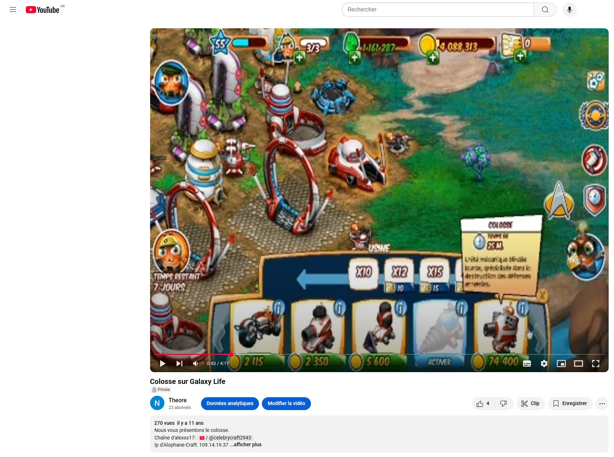
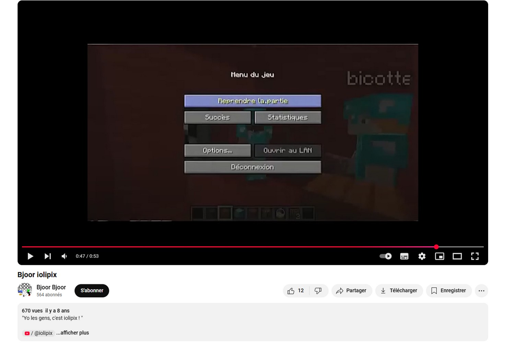
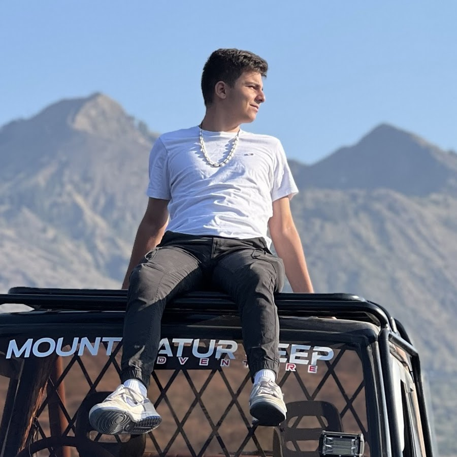
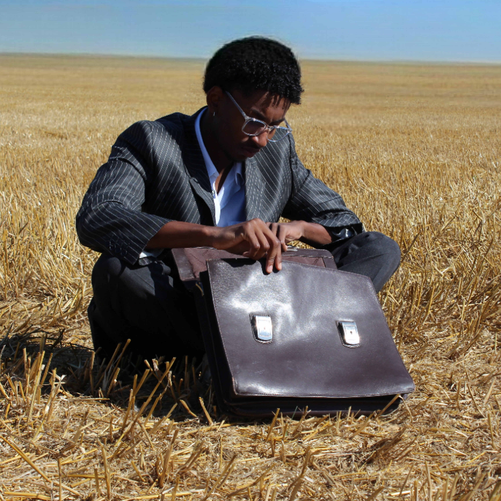
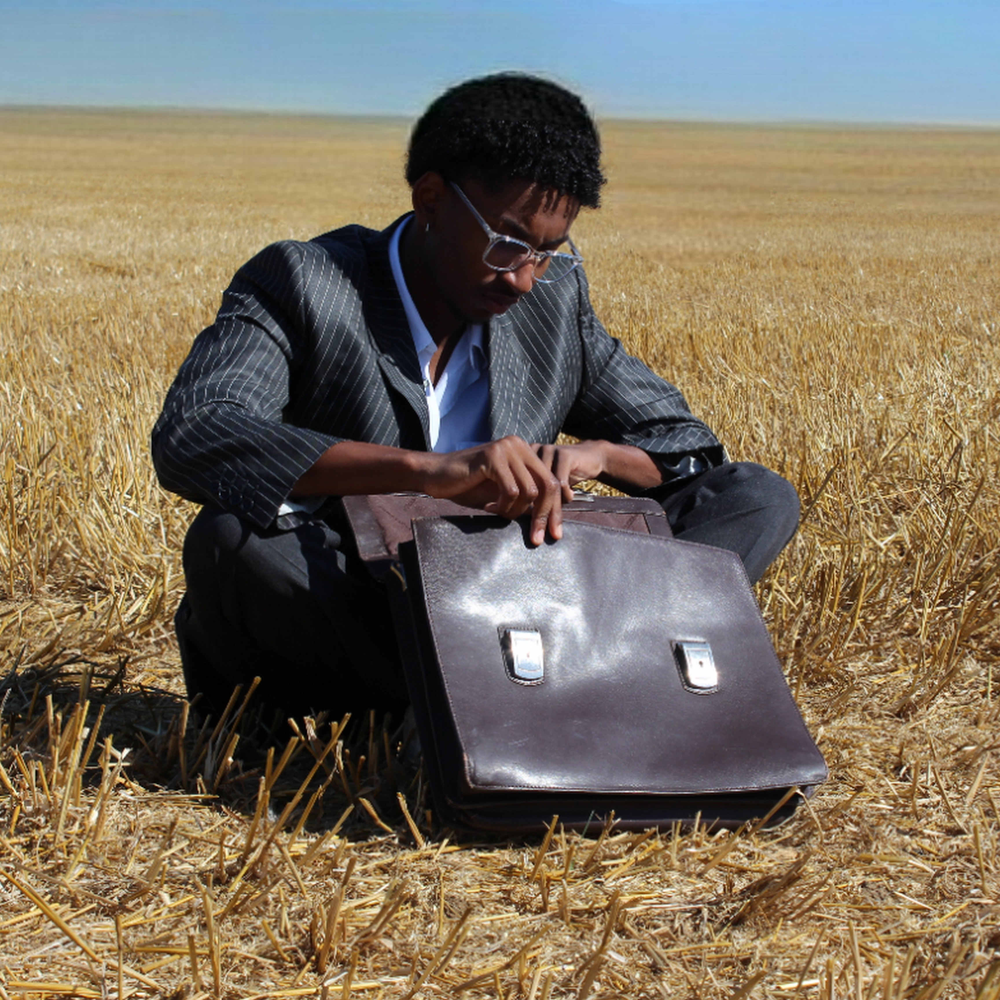
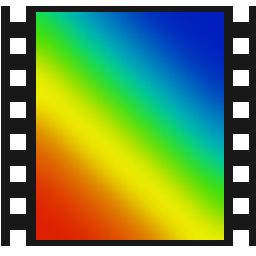

Avec ma passion pour les jeux vidéo et les sciences, j’ai rapidement développé une culture forte d’internet. La nécessité de savoir communiquer sur les réseaux, que ce soit pour apprendre ou se démarquer, m’a poussé à m’intéresser au milieu des influenceurs.
SMMA

En 2013, inspiré par la première génération de YouTubers, j’ai décidé de créer ma première chaîne YouTube Gaming. Sur mon chemin, j’ai croisé de nombreux influenceurs et réussi à m’entourer de personnes plus ou moins professionnelles, formatrices et bienveillantes, compte tenu de mon jeune âge.

J’ai poursuivi dans cette voie pendant de nombreuses années, notamment pour promouvoir mon serveur Minecraft.

Frustré par les critiques et insatisfait de la qualité de mes vidéos, j’ai décidé d’approfondir mes connaissances en cinématographie. Cela m’a conduit à rejoindre l’association Caméra Photo de Saintonge, où j’ai pu affiner mes compétences.
Quelques années plus tard, fort de ces améliorations, j’ai lancé ma web-série La Vue d’un Geek, dédiée à l’histoire et aux connaissances autour de la culture geek.
Assistant d'influenceurs
En grandissant, j’ai consacré moins de temps à cette activité. Cependant, une fois à l’université, j’ai décidé d’y revenir à temps partiel après mes cours, notamment en devenant assistant d’influenceur et en participant à divers projets audiovisuels.
Anto.gdh
Appellez-moi Theo


 

J'ai aussi réalisé l'image de Brwns, un artiste musical.
Cette expérience acquise dès mon jeune âge m’a permis de développer une connaissance très polyvalente en cinématographie : manipulation des caméras, montage, logiciels, colorimétrie, effets spéciaux, audio, et gestion de l’image de marque. La diversité des personnes avec lesquelles j'ai eu l'occasion de travailler m'a obligé à utiliser différents logiciels, notamment pour retravailler ou personnaliser les documents de post-production.


